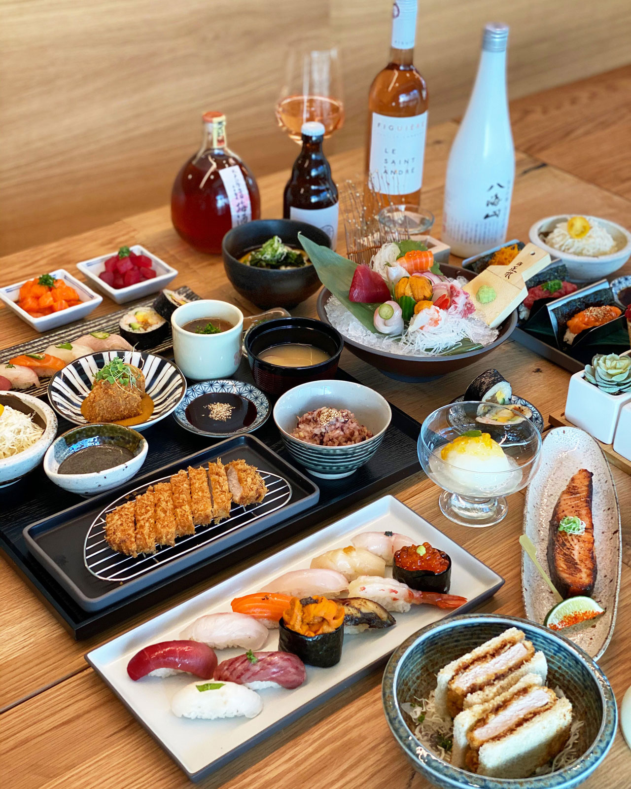

Ruby's
First, we have my personal favorite - Ruby's. This was my staple meal for most of my summers at home, personal favorites include Crispy Rice Bowl and the Creamy Chicken Pasta. The food is comforting, filling, and all so healthy!
I am proud to say I have successfully made my way through the Ruby's menu. If you are visiting, you HAVE to order the brussel sprouts ($7), it is absolutely amazing. My favorite thing to get is the Creamy Chicken Pasta ($13) or the Crispy Rice Bowl with chicken ($14) Pro-tip, ask for the truffle aioli to have with any dish, it is that good.
198 E 11th St New York, NY 10003

DomoDomo
DomoDomo is a Michellin star awarded restuarant with the freshest sushi you can get. The price is on the higher side, but the experience is so worth it
I love DomoDomo, it was a place filled with many memories to me. They have the highest quality fish and ingredients with such unique menu items. My personal favorites? The Uni Pasta ($24), Blue Crab Handroll($9), Scallop Risotto($22), and of course the omakase menu. This place also has a pretty substaintial drinks menu and the ambiance that makes it the perfect date spot.
Visit DomoDomo's Yelp account!
140 W Houston St New York, NY 10012
Mercer's Kitchen
Mercer's Kitchen has an amazing ambience and would be an amazing lcoation for dates. The location is a celebrity favorite and personally, one of the best burgers I have ever had.
I first came to Mercer's Kitchen after a shopping trip with a friend in SoHo. Being right in the center of SoHo, it is at the perfect spot. My favorite things to get on the menu: The Mercer Burger ($27), Warm Whole Artichoke ($24), and the Black Truffle Pizza ($27). The chefs here are extremely innovative and the menu is always changing! The ambiance also makes it anotehr classic date spot.
Visit Mercer's Kitchen's Yelp account!
99 Prince St New York, NY 10012